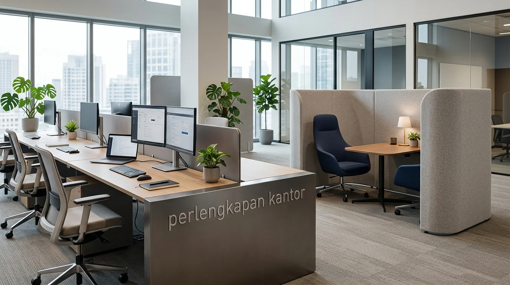

Mengapa perbandingan konsep open space kantor vs kubikal sangat krusial bagi manajemen perusahaan?
Perbandingan konsep open space kantor vs kubikal krusial karena pilihan tata ruang berdampak langsung pada budaya kerja, efisiensi penggunaan area, dan anggaran belanja inventaris.
Keputusan menentukan desain tata ruang kerja memengaruhi fleksibilitas operasional perusahaan dalam jangka panjang. Konsep open space meniadakan dinding pembatas atau sekat tinggi antar-meja, menciptakan area kerja menyatu yang luas. Sebaliknya, bilik kubikal klasik menggunakan sekat panel terpisah untuk memberikan ruang kerja tertutup bagi setiap staf.
Berdasarkan laporan International Workplace Design Survey periode 2024–2025, sebanyak 67% perusahaan berkembang memilih merenovasi area kerja mereka menjadi konsep open space demi memangkas biaya sewa gedung dan meningkatkan fleksibilitas tim. Pemilihan jenis furnitur dan perlengkapan kantor yang tepat menjadi penentu utama kesuksesan implementasi tata ruang tersebut.
Apa saja keunggulan utama konsep open space dibandingkan kubikal klasik?
Keunggulan utama open space meliputi penghematan luas lantai, peningkatan komunikasi antartim, pencahayaan alami yang merata, serta fleksibilitas penataan furnitur:
Efisiensi Penggunaan Luas Ruangan
Tanpa adanya sekat panel kubikal yang tebal, satu ruangan terbuka dapat menampung jumlah meja kerja yang lebih banyak. Hal ini menekan biaya sewa per meter persegi secara signifikan bagi perusahaan yang beroperasi di kawasan perkantoran pusat kota.
Kolaborasi Antartim yang Lebih Cepat
Konsep terbuka mempermudah koordinasi tanpa halangan dinding fisik. Rekan kerja dapat berdiskusi secara langsung tanpa perlu berpindah ruangan atau mengatur jadwal rapat formal, mempercepat alur pengambilan keputusan proyek kreatif.
Pemanfaatan Cahaya Alami
Ruangan tanpa sekat tinggi memungkinkan pencahayaan alami dari jendela gedung tersebar merata ke seluruh area kerja, menciptakan suasana ruang yang lebih terang, segar, dan hemat energi listrik.
Data evaluasi fasilitas kantor tahun 2025 menunjukkan bahwa pengadaan paket meja kerja bersama (bench system) untuk konsep open space mampu menekan biaya pengadaan furnitur hingga 22% dibandingkan pembelian unit kubikal individual terisolasi.

Sistem meja kerja open space modular terintegrasi saluran kabel untuk efisiensi area kerja korporat kontemporer.
Bagaimana bilik kubikal klasik mempertahankan relevansinya di era modern?
Bilik kubikal mempertahankan relevansinya karena memberikan tingkat privasi visual, fleksibilitas fokus kerja individu, dan peredaman kebisingan yang tinggi.
Untuk pekerjaan yang membutuhkan tingkat konsentrasi tinggi, seperti analisis data, pembukuan keuangan, atau layanan bantuan hukum, kubikal memberikan perlindungan dari gangguan visual dan suara sekitarnya. Sekat panel berfungsi membatasi lalu lintas pandangan mata dan mengurangi gema suara di dalam ruangan.
Oleh karena itu, kombinasi antara area terbuka dan beberapa kubikal khusus atau quiet pod kini menjadi tren kompromi yang banyak diterapkan oleh korporat modern di Jakarta.
Matriks Perbandingan Open Space Office vs Kubikal Klasik
| Parameter Evaluasi | Konsep Open Space Office | Bilik Kubikal Klasik |
|---|---|---|
| Efisiensi Kapasitas Ruang | Sangat Tinggi (30% Lebih Hemat Area) | Sedang – Terbatas Oleh Tebal Sekat |
| Tingkat Kolaborasi Tim | Tinggi & Spontan Tanpa Batas | Cenderung Formal / Terisolasi |
| Privasi & Fokus Individu | Rendah (Rentan Gangguan Suara) | Sangat Tinggi & Tenang |
| Fleksibilitas Penataan | Sangat Mudah Disesuaikan (Modular) | Sulit Diubah (Struktur Tetap) |
| Biaya Pengadaan Furnitur | Lebih Ekonomis (Satu Bench System) | Lebih Tinggi per Unit Kerja |
- Zonasi Akustik: Pisahkan area kolaboratif berisik dengan area konsentrasi menggunakan sekat akrilik rendah atau partisi tanaman hias.
- Manajemen Kabel Rapi: Gunakan meja dengan integrated cable spine agar lantai bebas dari kabel yang berserakan.
- Penyimpanan Pribadi Fleksibel: Sediakan laci dorong berkunci (mobile pedestal) di bawah meja setiap staf untuk keamanan berkas personal.
Apa saja faktor yang wajib dipertimbangkan sebelum mengubah tata ruang kantor?
Faktor yang wajib dipertimbangkan meliputi jenis alur kerja harian, budaya komunikasi perusahaan, tingkat kebisingan yang dapat ditoleransi, dan ketersediaan anggaran fasilitas.
Jika mayoritas pekerjaan tim bersifat kolaboratif dan membutuhkan kecepatan eksekusi, konsep open space adalah pilihan paling rasional. Sebaliknya, jika pekerjaan dominan membutuhkan kerahasiaan berkas fisik, lengkapi area kerja dengan sekat pembatas atau penyimpan dokumen yang aman.
Mengapa penyediaan furnitur dan perlengkapan kantor yang tepat sangat penting untuk ruang terbuka?
Penyediaan furnitur yang tepat penting untuk memastikan ruang kerja terbuka tetap rapi, memiliki manajemen kabel yang baik, serta mendukung kenyamanan fisik karyawan.
Area open space yang terpapar tanpa sekat memerlukan kerapian ekstra. Penggunaan meja kerja yang dilengkapi saluran kabel terintegrasi (cable management system) serta rak penyimpanan bawah meja (mobile pedestal) menjaga visual ruangan tetap bersih dan profesional. Memilih perlengkapan kantor berstandar komersial memastikan ketahanan jangka panjang terhadap intensitas penggunaan harian.
FAQ tentang Konsep Open Space Kantor vs Kubikal
Kesimpulan Praktis
Memahami perbandingan konsep open space kantor vs kubikal memungkinkan manajemen mengambil keputusan tata ruang yang tepat sesuai dengan karakter dan kebutuhan operasional bisnis. Konsep open space unggul dalam efisiensi biaya, kapasitas ruangan, dan fleksibilitas kerja tim. Pastikan transformasi ruang kerja Anda didukung oleh jajaran produk perlengkapan kantor modern berkualitas tinggi untuk hasil terbaik. Pesan kebutuhan furnitur kantor Anda sekarang untuk menciptakan area kerja yang efisien dan representatif.

Penulis: Spesialis Tata Ruang Komersial
Divisi Konsultasi Tata Ruang & Efisiensi Fasilitas Kantor di Perlengkapan Kantor. Artikel ini telah ditinjau dan divalidasi oleh Konsultan Efisiensi Fasilitas Korporat berdasarkan data International Workplace Design Survey dan evaluasi fasilitas kerja 2025.